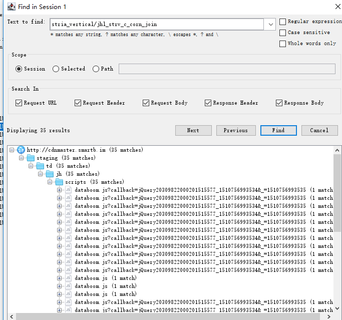
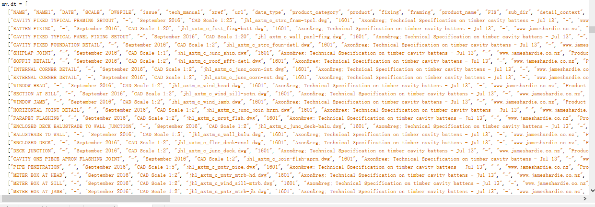

多进程爬取js加载的网站的pdf文件
最近接了一个自动化的小外包，需要将国外的某一个网站上的pdf文件全部下载下来，目标网站
问题
所有数据是js加载，第一感觉应该使用selniume来做，但是网站首页的目录也是动态加载的，只有鼠标出发事件的时候才会加载div，这样子selniume无法来做，然后就想着抓包看一下，用charles，抓包之后，发现大大的惊喜，原来为了反爬虫，把数据都放在一个js文件，然后触发事件的时候再进行拼凑，这个措施已经可以防止很多新手爬虫爬取，可以说是一个很棒的反爬措施，但是上有政策，下有对策，我们抓完包之后，发现，网站一开始就把所有数据都进行返回。

使用charles按照pdf文件名找到了数据源

分析完毕之后，我们就可以编码了。
单进程下载
1 | __author__ = 'seven' |
多进程下载
__author__ = 'seven'
import requests
import codecs
import json
import os
import re
from multiprocessing import Process
'''
分割任务多进程程下载
'''
header = {
'Referer': 'http://www.jameshardie.co.nz/specifiers/cad-library',
'User-Agent': 'Mozilla/5.0 (Windows NT 10.0; WOW64) AppleWebKit/537.36 (KHTML, like Gecko) Chrome/61.0.3163.100 Safari/537.36'
}
baseurl = 'http://cdnmaster.smartb.im/staging/td/jh/cadbim/'
##将要获取的数据源写入文件当中
def writedatatojson():
data_response = requests.get('http://cdnmaster.smartb.im/staging/td/jh/scripts/databoom.js',headers = header)
datatable = re.search('my.dt=(.)*;my',data_response.text).group(0).split(';my')[0]
datatable = json.loads(datatable[7:])
with codecs.open('data.json', 'w') as file:
file.write(json.dumps(datatable))
file.close()
##从文件当中获取json数据
def getdatafromjson():
with open('data.json') as json_file:
data = json.load(json_file)
return data
##下载文件
def download(datas,myrange):
for order in myrange:
data = datas[order]
category = data[-4]
file_name = str(data[-1]).replace(category + '/', '')
down_url = str(data[-1])
# pdf 下载链接
pdf_url = '%s%s.pdf' % (baseurl, 'pdf/' + down_url)
# dwg下载链接
dwg_url = '%s%s.dwg' % (baseurl, 'dwg/' + down_url)
# gif下载链接
gif_url = '%s%s.gif' % (baseurl, 'thumbs/' + down_url)
#新建文件夹
if not os.path.exists(category):
os.makedirs(category)
print("创建文件夹成功")
#下载pdf
print("正在下载pdf")
pdf_response = requests.get(pdf_url,stream=True,headers = header)
with open(category+'/'+file_name+'.pdf','wb') as pdf_file:
pdf_file.write(pdf_response.content)
print("pdf下载完成")
print("正在下载dwg")
dwg_response = requests.get(dwg_url,stream=True,headers = header)
with open(category+'/'+file_name + '.dwg', 'wb') as dwg_file:
dwg_file.write(dwg_response.content)
print("dwg下载完成")
print("正在下载gif")
gif_response = requests.get(gif_url,stream=True,headers = header)
with open(category+'/'+file_name + '.gif', 'wb') as gif_file:
gif_file.write(gif_response.content)
print("gif下载完成")
if __name__ == '__main__':
writedatatojson()
step = 100
datas = getdatafromjson()
blocks = range(1,len(datas)+1)
##将数据分段，实行多线程下载
range_lists = [blocks[x:x + step] for x in range(0, len(blocks), step)]
processlist = []
for range_list in range_lists:
p = Process(target=download,args=(datas,range_list))
processlist.append(p)
for p in processlist:
p.start()
源码可以戳这里